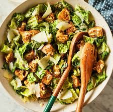

ingredients
- 1 large romaine lettuce heart (or 2 small), chopped
- 1 cup croutons (store-bought or homemade)
- 1/4 cup freshly grated Parmesan cheese
- 1 clove garlic, minced
- 2 anchovy fillets (or 1 tsp anchovy paste)
- 1 tsp Dijon mustard
- 1 tsp Worcestershire sauce
- 1 egg yolk (or 1 tbsp mayonnaise)
- 2 tbsp fresh lemon juice
- 1/3 cup olive oil
- Salt and pepper, to taste
making steps
the dressing
Mash the garlic and anchovy into a paste using a fork or the back of a spoon.
Add the mustard, Worcestershire sauce, lemon juice, and egg yolk (or mayo).
Slowly whisk in the olive oil until the dressing emulsifies and thickens.
Season with salt, pepper, and optional grated Parmesan. Set aside.
assemble the salad
In a large bowl, toss the chopped romaine lettuce with the dressing.
Add the croutons and toss again lightly.
Top with shaved or grated Parmesan cheese.
